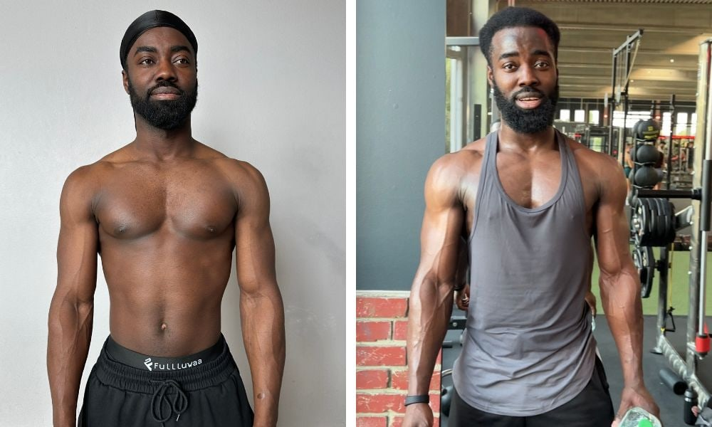
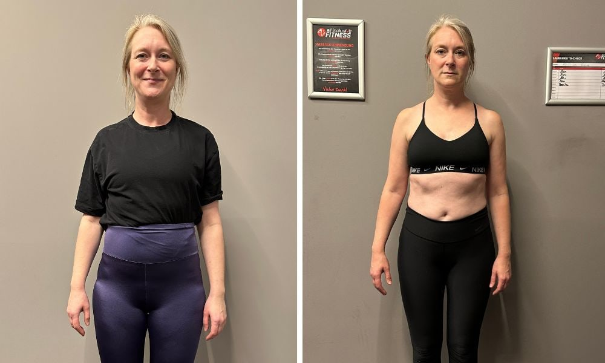

Zwischen Terminen, Verantwortung und To-Dos hast du dich aus den Augen verloren. Diäten haben nicht funktioniert. Mehr Sport allein bringt dich nicht ans Ziel. Was fehlt: ein System, das in DEIN Leben passt.
Kein Alleskönner-Ansatz. Vier konkrete Bausteine, die zusammen den Unterschied machen und sich in dein reales Leben integrieren lassen.
Bevor wir trainieren, klären wir das Wichtigste: warum es bisher nicht klappte. Ohne diesen Schritt scheitert jedes Programm.
Strukturiert. Effizient. Maximale 3-4 Einheiten pro Woche, abgestimmt auf deinen Alltag. Keine Stunden im Studio.
Keine Diät. Klare Ernährungsstrategie, die in dein Leben passt. Auch im Restaurant, auf Reisen, im Stress.
Der Unterschied zwischen 4 Wochen Erfolg und 4 Jahren. Wir bauen Gewohnheiten, die ohne Willenskraft funktionieren und selbst überleben, wenn das Leben kompliziert wird.
Keine Versprechen. Echte Zahlen aus echter Arbeit. Was passiert, wenn Methode und Disziplin sich treffen.
Mütter, Geschäftsführer, Programmierer, Schichtarbeiter. Keine zwei gleich.
Nicht extrem. Nicht dramatisch. Nachhaltig. Daten aus 200+ Programmen.
12 Monate nach Programm-Ende. Branchendurchschnitt: 5%. Das ist der Unterschied.
Über 60 Bewertungen. Keine perfekt. Die meisten ehrlich exzellent.
Ziehe den Slider und sieh selbst. Eine echte Transformation einer Klientin nach 5 Monaten Programm. Keine Photoshop. Keine Filter.
← Ziehen, um zu vergleichen →
Ich habe 7 kg in 4 Monaten verloren. Und genauso wichtig: ich habe sie nicht wieder zugenommen. Nicht weil ich Disziplin habe, sondern weil ich ein System gebaut habe.
Dieses System gebe ich heute weiter. Über 200 Klienten haben es bereits angewendet: Mütter mit zwei Jobs, Geschäftsführer mit 12-Stunden-Tagen, Programmierer mit Schreibtisch-Burnout. Es funktioniert, weil es kein Diät-Programm ist. Es ist ein Lebenssystem.
Drei Geschichten von Menschen, die mit Joe gearbeitet haben. Keine Marketing-Sätze. Echte Ergebnisse.
"Ich habe drei Diäten ausprobiert und immer alles wieder zugenommen. Mit Joe habe ich endlich verstanden, warum. Heute esse ich normal und sehe besser aus als mit 25."

"Ich wollte Muskeln aufbauen, ohne im Studio zu wohnen. Joe hat mir gezeigt, dass 3 effiziente Einheiten pro Woche reichen. Mein Bluttest hat es bewiesen."

"Stress hatte mich kaputt gemacht. Joe hat nicht nur das Training angepasst, sondern mein ganzes System. Ich schlafe besser, esse besser, lebe besser."
In 90 Tagen zum Körper, der zu deinem Leben passt. Vollständig online. Mit allem, was über 200 Klienten bereits verändert hat, strukturiert in 12 Wochen.
Begrenzte Plätze pro Kohorte · Nur 50 pro Quartal
Wähle den Weg, der zu deinem Leben passt. Alle drei führen zum gleichen Ergebnis. Der Unterschied liegt im Tempo und in der Begleitung.
30 Minuten. Kein Sales-Pitch. Keine Verpflichtung. Nur ein ehrliches Gespräch darüber, was dein Körper wirklich braucht und ob mein System der richtige Weg für dich ist.
Kostenloses Erstgespräch buchen →Antwort innerhalb 24h · Begrenzte Plätze pro Monat